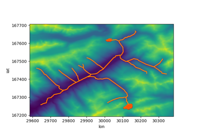

Example Gallery
The examples listed here are intended to familiarize the reader with the workflow of GridKit, and to serve as inspiration regarding the types of problems that can be solved using GridKit.
Cell centric
These examples highlight operations where specific cells are targeted.
Downslope path

2D Diffusion
Grid definitions
These examples highlight the different ways grids can be constructed and manipulated.
Rotation animation
Rotating grids

Grid Tiles
Triangles in hexagons
Patterns created from regular grid interactions
The following examples showcase patterns that can be created using regular grids.
Cellular automata: Hexagonal automata
Cellular automata: Hexagonal automata
Flower of life
Cellular automata: Conway’s game of life
Cellular automata: Conway's game of life
Raster operations
These examples show how traditional raster data can be analysed and modified using GridKit.
NDVI
Partial overlap
Coordinate transformations
Resampling
Combining land cover and DEM
Vector data interactions
The following examples highlight the interactions between vector data and regular grids.
Aggregate from points

Geometry intersections
Tiled aggregation from points with Dask
Tiled aggregation from points with Dask